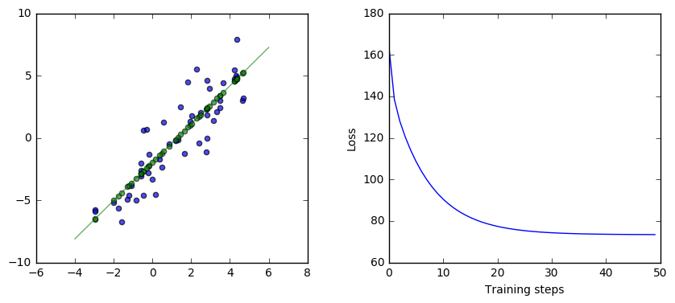
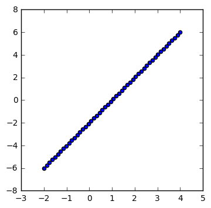
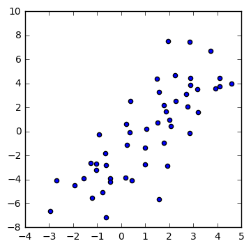
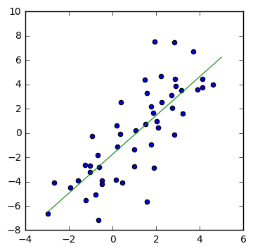
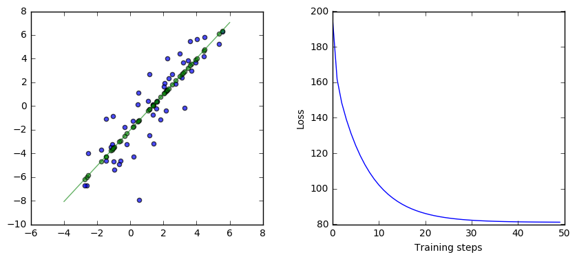
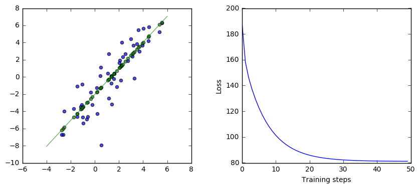

Getting Started in TensorFlow
A look at a very simple neural network in TensorFlow
This is an introduction to working with TensorFlow. It works through an example of a very simple neural network, walking through the steps of setting up the input, adding operators, setting up gradient descent, and running the computation graph.
A simple neural network
Let’s start with code. We’re going to construct a very simple neural network computing a linear regression between two variables, y and x. The function it tries to compute is the best $w_1$ and $w_2$ it can find for the function $y = w_2 x + w_1$ for the data. The data we’re going to give it is toy data, linear perturbed with random noise.
This is what the network looks like:
|

Here is the TensorFlow code for this simple neural network and the results of running this code:
|
/usr/local/lib/python2.7/dist-packages/matplotlib/font_manager.py:273: UserWarning: Matplotlib is building the font cache using fc-list. This may take a moment.
warnings.warn('Matplotlib is building the font cache using fc-list. This may take a moment.')

In the remainder of this notebook, we’ll go through this example in more detail.
From the beginning
Let’s walk through exactly what this is doing from the beginning. We’ll start with what the data looks like, then we’ll look at this neural network, what is executed when, what gradient descent is doing, and how it all works together.
The data
This is a toy data set here. We have 50 (x,y) data points. At first, the data is perfectly linear.
|

Then we perturb it with noise:
|

What we want to do
What we’re trying to do is calculate the green line below:
|

Remember that our simple network looks like this:
|

That’s equivalent to the function $\hat{y} = w_2 x + w_1$. What we’re trying to do is find the “best” weights $w_1$ and $w_2$. That will give us that green regression line above.
What are the best weights? They’re the weights that minimize the difference between our estimate $\hat{y}$ and the actual y. Specifically, we want to minimize the sum of the squared errors, so minimize $\sum{(\hat{y} - y)^2}$, which is known as the L2 loss. So, the best weights are the weights that minimize the L2 loss.
Gradient descent
What gradient descent does is start with random weights for $\hat{y} = w_2 x + w_1$ and gradually moves those weights toward better values.
It does that by following the downward slope of the error curves. Imagine that the possible errors we could get with different weights as a landscape. From whatever weights we have, moving in some directions will increase the error, like going uphill, and some directions will decrease the error, like going downhill. We want to roll downhill, always moving the weights toward lower error.
How does gradient descent know which way is downhill? It follows the partial derivatives of the L2 loss. The partial derivative is like a velocity, saying which way the error will change if we change the weight. We want to move in the direction of lower error. The partial derivative points the way.
So, what gradient descent does is start with random weights and gradually walk those weights toward lower error, using the partial derivatives to know which direction to go.
The code again
Let’s go back to the code now, walking through it with many more comments in the code this time:
|

This version of the code has a lot more comments at each step. Read through the code and the comments.
The core piece is the loop, which contains a single run call. run executes the operations necessary for the GradientDescentOptimizer operation. That includes several other operations, all of which are also executed each time through the loop. The GradientDescentOptimizer execution has a side effect of assigning to weights, so the variable weights changes each time in the loop.
The result is that, in each iteration of the loop, the code processes the entire input data set, generates all the estimates $\hat{y}$ for each $x$ given the current weights $w_i$, finds all the errors and L2 losses $(\hat{y} - y)^2$, and then changes the weights $w_i$ by a small amount in the direction of that will reduce the L2 loss.
After many iterations of the loop, the amount we are changing the weights gets smaller and smaller, and the loss gets smaller and smaller, as we narrow in on near optimal values for the weights. By the end of the loop, we should be near the lowest possible values for the L2 loss, and near the best possible weights we could have.
The details
This code works, but there are still a few black boxes that are worth diving into here. l2_loss? GradientDescentOptimizer? What exactly are those doing?
One way to understand exactly what those are doing is to do the same thing without using those functions. Here is equivalent code that calculates the gradients (derivatives), L2 loss (sum squared error), and GradientDescentOptimizer from scratch without using those functions.
|

This code looks very similar to the code above, but without using l2_loss or GradientDescentOptimizer. Let’s look at exactly what it is doing instead.
This code is the key difference:
loss = 0.5 * tf.reduce_sum(tf.mul(yerror, yerror))
gradient = tf.reduce_sum(tf.transpose(tf.mul(input, yerror)), 1, keep_dims=True)
update_weights = tf.assign_sub(weights, learning_rate * gradient)
The first line calculates the L2 loss manually. It’s the same as l2_loss(yerror), which is half of the sum of the squared error, so $\frac{1}{2} \sum (\hat{y} - y)^2$. With this code, you can see exactly what the l2_loss operation does. It’s the total of all the squared differences between the target and our estimates. And minimizing the L2 loss will minimize how much our estimates of $y$ differ from the true values of $y$.
The second line calculates . What is that? It’s the partial derivatives of the L2 loss with respect to $w_1$ and $w_2$, the same thing as what gradients(loss, weights) does in the earlier code. Not sure about that? Let’s look at it in more detail. The gradient calculation is going to get the partial derivatives of loss with respect to each of the weights so we can change those weights in the direction that will reduce the loss. L2 loss is , where . So, using the chain rule and substituting in for $\hat{y}$ in the derivative, $\frac{\partial}{\partial w_2} = \sum{(\hat{y} - y)\, x_i}$ and $\frac{\partial}{\partial w_1} = \sum{(\hat{y} - y)\, 1}$. GradientDescentOptimizer does these calculations automatically for you based on the graph structure.
The third line is equivalent to weights -= learning_rate * gradient, so it subtracts a constant the gradient after scaling by the learning rate (to avoid jumping too far each time, which risks moving in the wrong direction). It’s also the same thing that GradientDescentOptimizer(learning_rate).minimize(loss) does in the earlier code. Gradient descent updates its first parameter based on the values in the second after scaling by the third, so it’s equivalent to the assign_sub(weights, learning_rate * gradient).
Hopefully, this other code gives you a better understanding of what the operations we used previously are actually doing. In practice, you’ll want to use those high level operators most of the time rather than calculating things yourself. For this toy example and simple network, it’s not too bad to compute and apply the gradients yourself from scratch, but things get more complicated with larger networks.